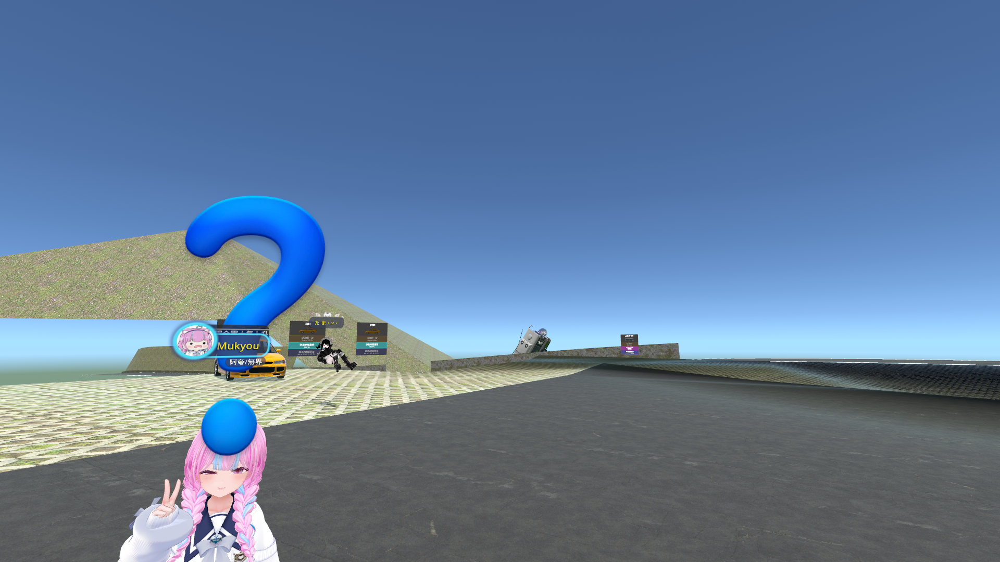
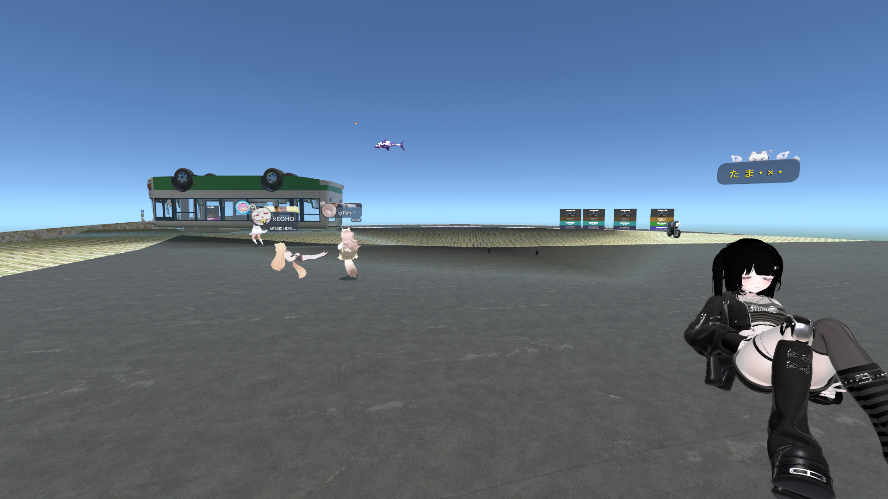
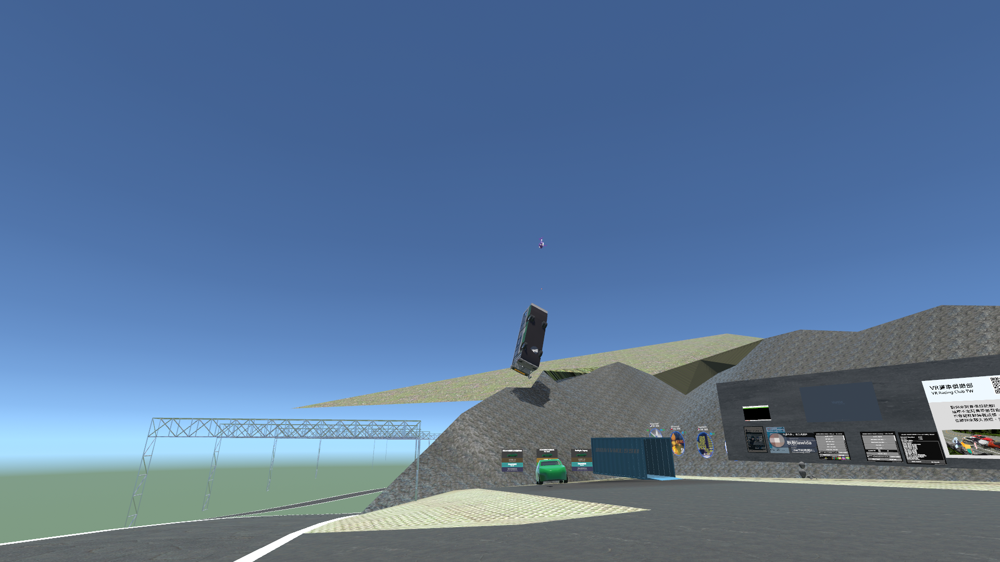
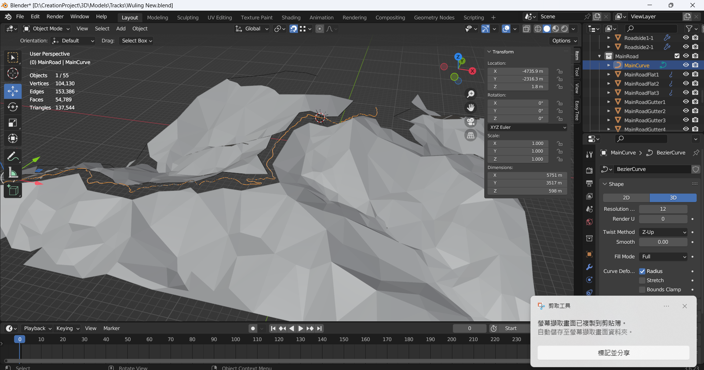
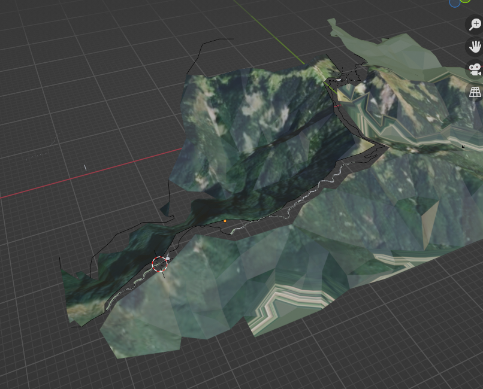
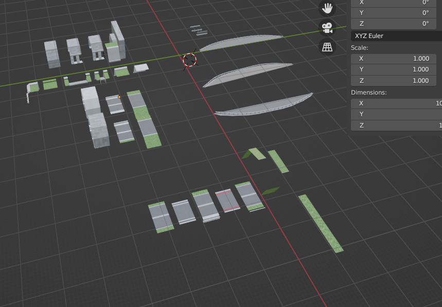

Project T · 2025 · VRChat · 進行中WIP
Project T — 武嶺Project T — Wuling
（專案說明待補）
(Project description to be added)
製作進度Progress Record
初版 VRChat 世界 · 山地 blockout 與展示板
First VRChat build · Mountain blockout and display boards

賽道早期版本 · 起跑線與摩托車
Early race track · Start line with motorcycles

社群測試 · 玩家試玩記錄
Community test · Player playtesting record

測試期間 · 社群聚集活動
During testing · Community gathering
技術過程Technical Process

Blender 路面建模 · 山道走線與地形骨架
Blender road mesh · Road alignment and terrain skeleton

Blender 地形鳥瞰 · 低多邊形山體與公路路徑
Blender terrain aerial · Low-poly mountain and road path

模組化路段素材 · 路段元件庫排列
Modular road assets · Road segment component library
技術細節Technical Details
平台Platform
VRChat SDK3 · PC + Quest 雙平台
地點Location
台 14 甲線武嶺段 · 海拔 3275m · 台灣公路最高點
Highway 14A Wuling · 3,275 m · Taiwan's highest road point
地形資料Terrain Data
（待補）
(To be added)
狀態Status
地形與路面建模中，尚未發佈
Terrain and road modelling in progress, not yet released